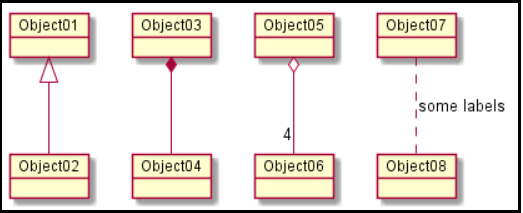

Object Diagram
Na Unified Modeling Language (UML),
um diagrama de objetos se concentra
em algum conjunto particular de objetos
e atributos e os links entre essas instâncias.
Um conjunto correlacionado de diagramas de objetos
fornece uma visão de como se espera que uma visão arbitrária de um sistema evolua com o tempo
@startuml
object Object01
object Object02
object Object03
object Object04
object Object05
object Object06
object Object07
object Object08
Object01 <|-- Object02
Object03 *-- Object04
Object05 o-- "4" Object06
Object07 .. Object08 : some labels
@enduml
